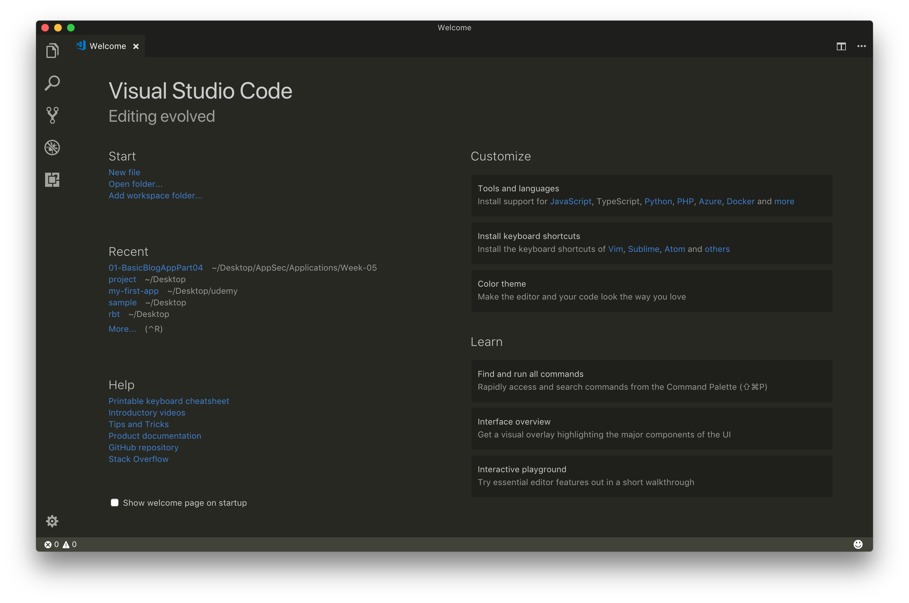
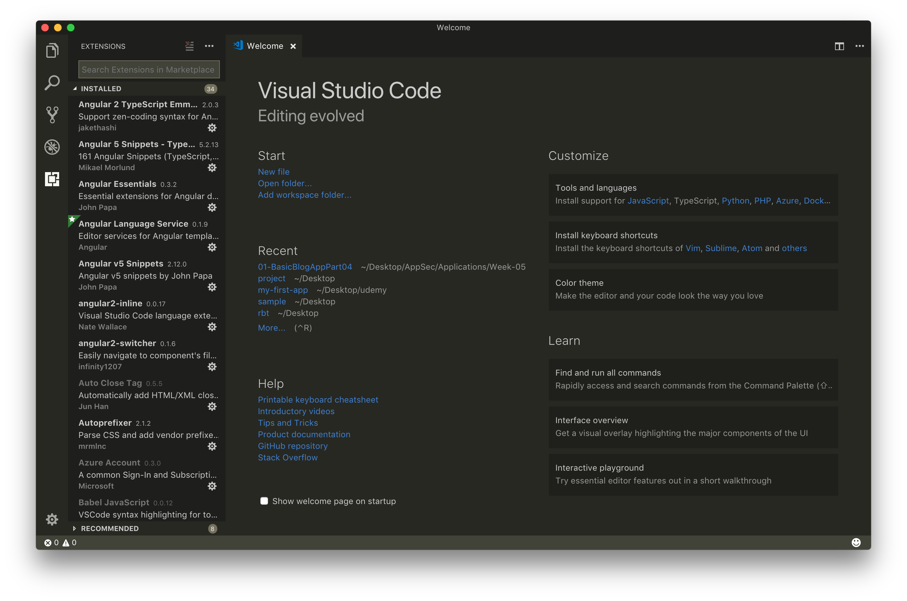
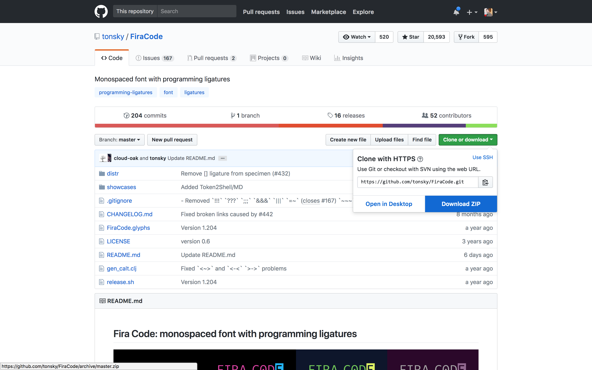
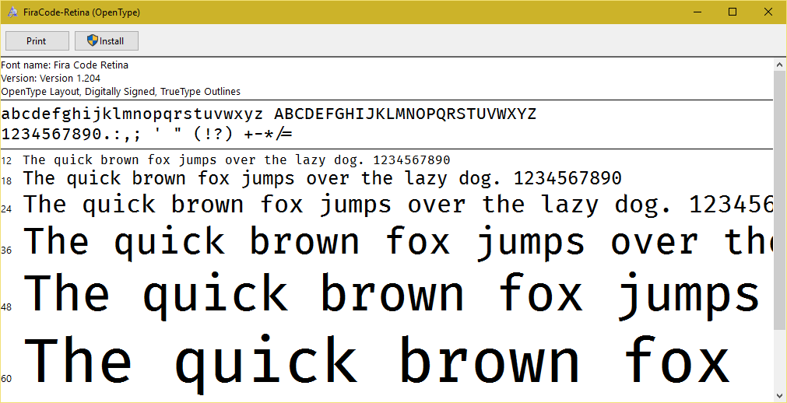
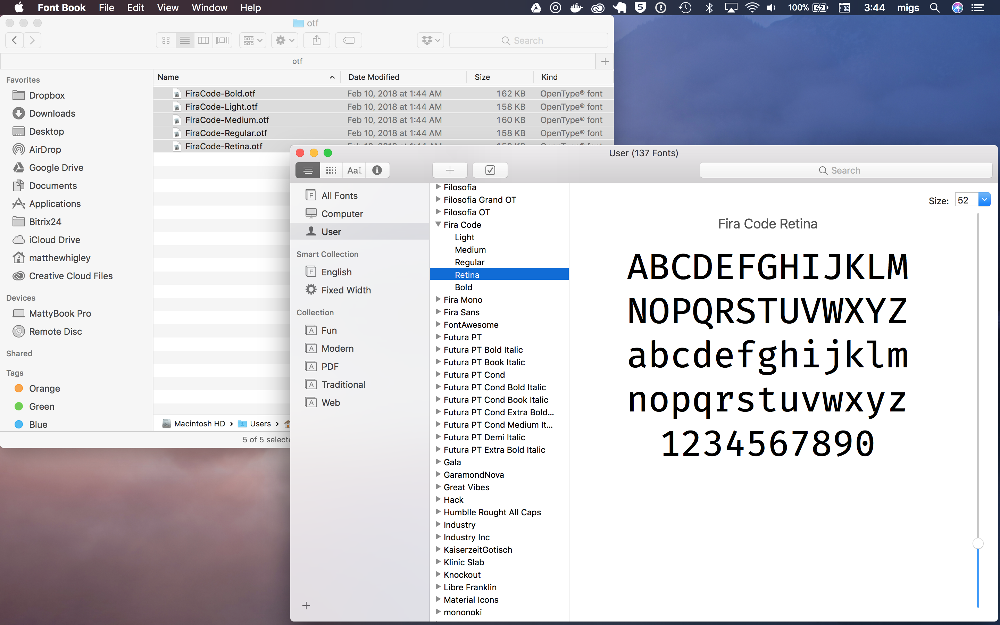

Clicking on the "puzzle block" icon on the left navigation bar of VSCode opens the sidebar and lets you start installing plugins.
Note: You can click on any of the icons for various purposes to open and close the sidebar.
Let's type Autoprefixer into the search box and install our first plugin. You may have to click the refresh button to turn on the plugin.

Now search for the remaining four plugins and install each of those.
Note: Second level plugins are automatically installed as dependencies of first level plugins. It's like getting 10 free plugins for the price of 5!
The settings.json file will need to be placed in the following folders:
Windows: ~/AppData/Roaming/Code/User/settings.json
Mac: ~/Library/Application Support/Code/User/settings.json
Let's add this now.
ctl + s or Mac: ⌘ + s.Note: Windows users, your file will probably be saved as a .txt file. We'll fix that momentarily.
mv ~/Desktop/win.settings.json.txt ~/AppData/Roaming/Code/User/settings.jsonmv ~/Desktop/mac.settings.json ~/Library/Application Support/Code/User/settings.jsonIf you noticed in your settings.json file you just copied into the VSCode app, the very first line referred to a font you probably don't have on your system already. Let's fix that.
Go to https://github.com/tonsky/FiraCode and download a zipped version of the repo.

Unzip that file, double click into the FiraCode-Master folder then into the distr folder.
ttf folder and double click each file. Click the install button to add it to your system.
⌘ + space and type Font Book and click on the result to open.otf folder and drag all the fonts into your Font Book.